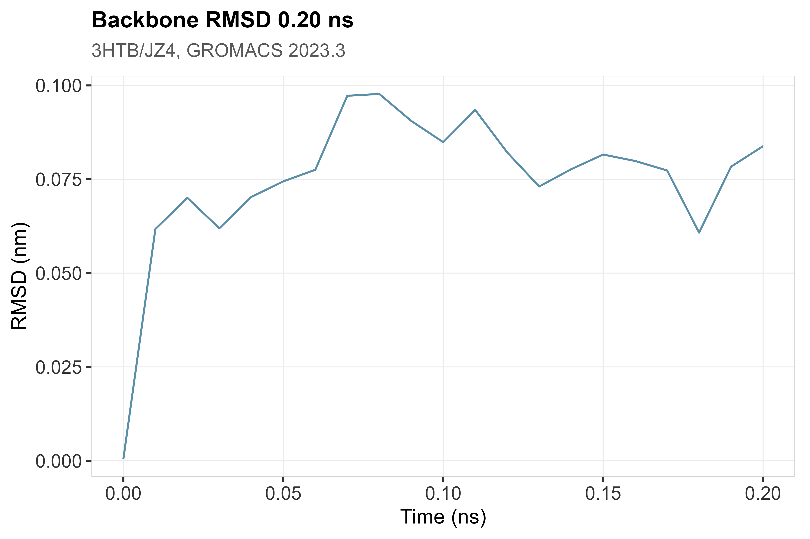
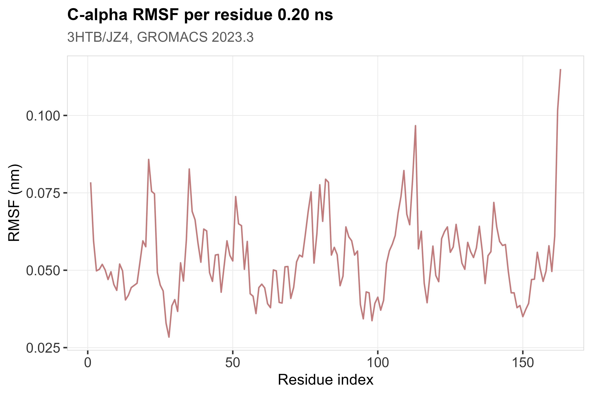
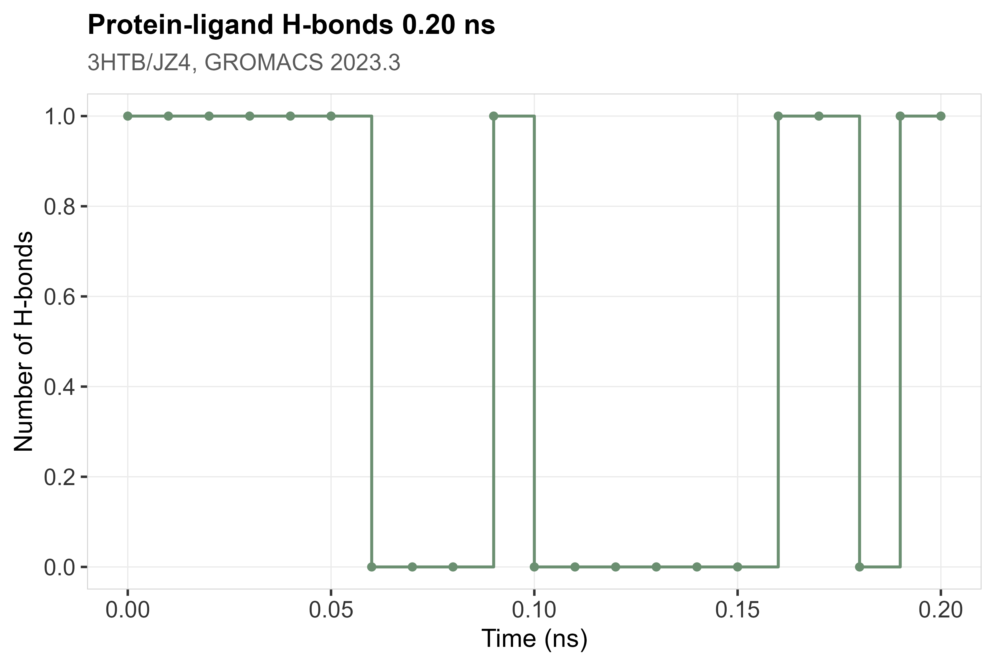
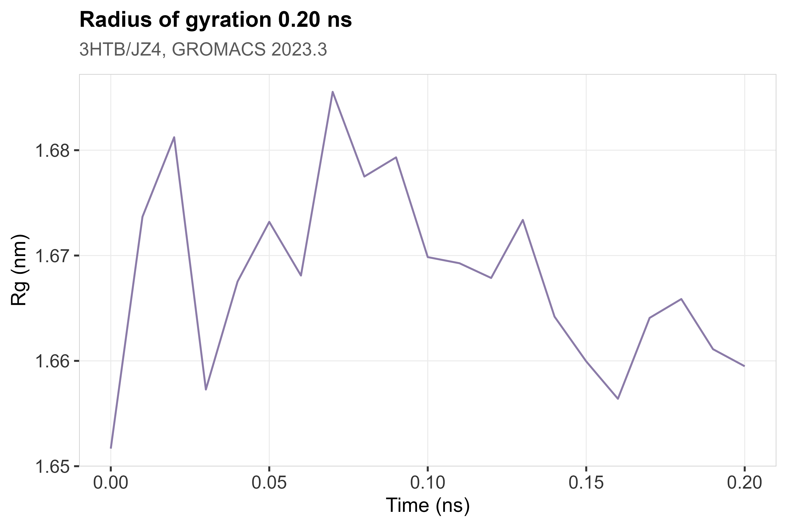
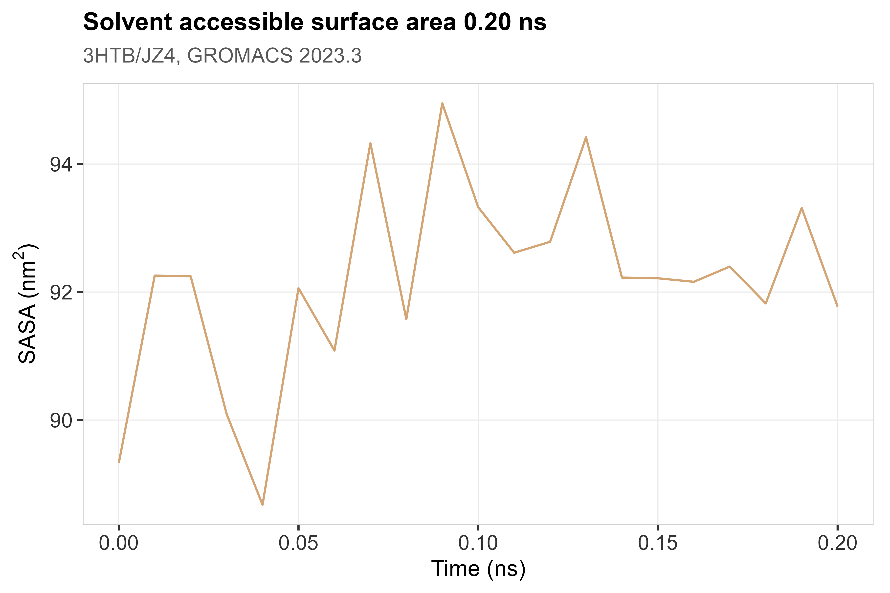
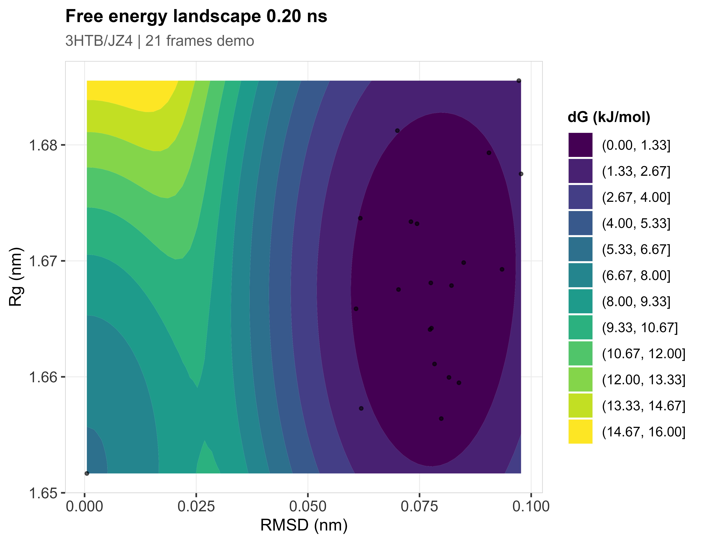
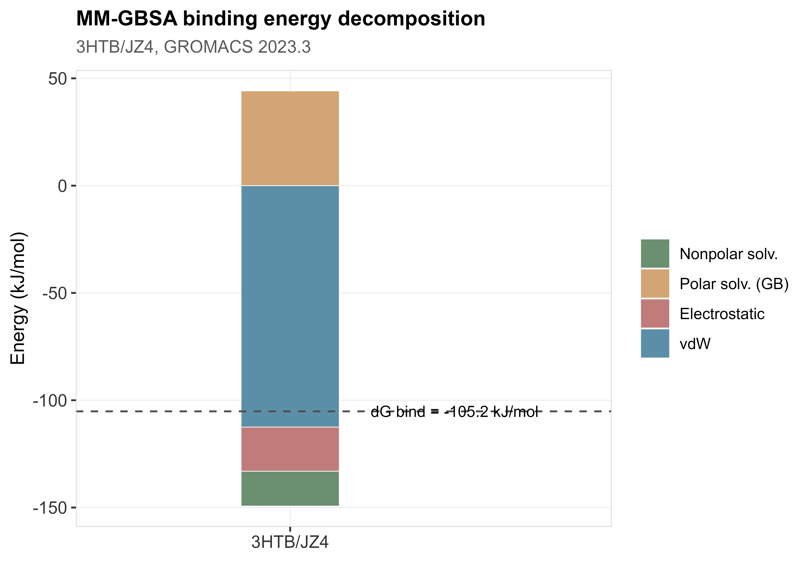
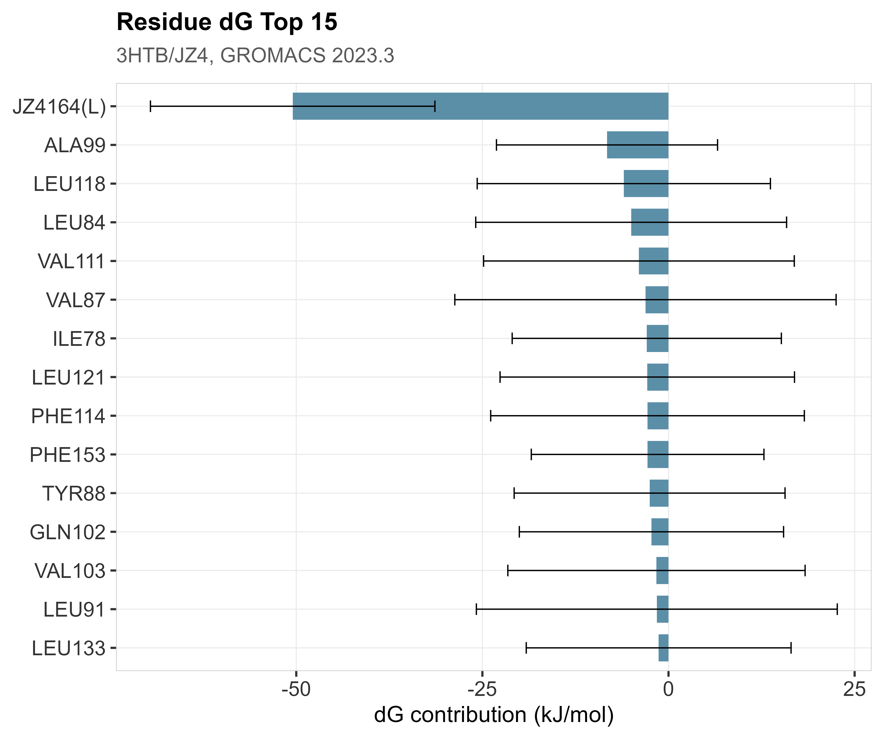

状态：REAL
运行复合物MD_runComplexMd.sh + 分析出图_plotMdAnalysis.R
REAL：RCSB PDB 3HTB（T4 lysozyme L99A/M102Q + JZ4）。GROMACS 2023.3 全流程，amber99sb-ildn/tip3p + GAFF2，0.15 M NaCl，1 ns 生产（演示尺度）。
详见 数据文件/DATA_SOURCE.md 与 工作文件_mdwork/3HTB/。
"skill","stage","n_rows","n_cols","n_samples","group_source","toy","data_provenance","accession","sourced_skill_scripts","notes","checked_at" "MolecularDynamics","post",21,4,1,"n/a single complex",FALSE,"REAL","RCSB PDB 3HTB","运行复合物MD_runComplexMd.sh; 分析出图_plotMdAnalysis.R; 出版级出图/PlotQA","REAL MD E2E: pdb2gmx(amber99sb-ildn/tip3p) + GAFF2(JZ4) + 0.15M NaCl; EM/NVT/NPT/0.20 ns production; frames=21; mean RMSD=0.075 nm; mean Rg=1.668 nm","2026-08-31 00:05:09"








0.20 ns 演示轨迹：backbone RMSD 均值 0.075 nm（末段 0.079 nm）；Rg 均值 1.668 nm；SASA 均值 92.2 nm²；蛋白-配体氢键均值 0.5 个。MM-GBSA ΔG_bind = -105.2 kJ/mol（GB igb=5，21 帧，演示尺度；未含熵项）。演示尺度仅验证流程与出图，结合稳定性与自由能结论需 ≥100 ns 重复轨迹。
生成时间：2026-08-31 00:05:09 · 报告规范：统一交付规范_DeliveryStandards · 版本 v1